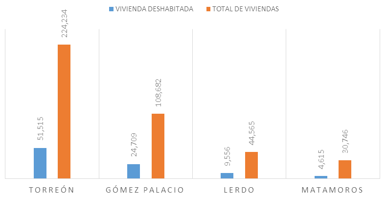
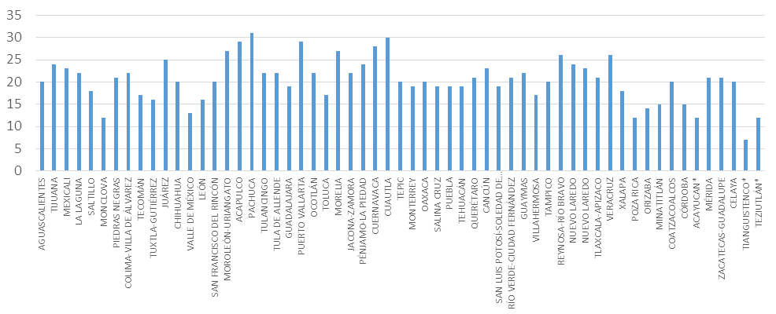

El aumento en el número de viviendas deshabitadas en Torreón y la Zona Metropolitana de La Laguna (ZML) no es una problemática reciente y se deben ejercer acciones para solucionarla. Según el Programa Universitario de Estudios sobre la Ciudad de la UNAM, que trata sobre el perfil del sector de la vivienda, entre los principales elementos que provocan esta situación en México se destaca la relación con las zonas marginadas y la percepción de inseguridad que existe entre los habitantes.
En la actualidad el 22.14% de las viviendas en la Zona Metropolitana de la Laguna se encuentran deshabitadas, de acuerdo con INEGI. Esto puede deberse, según el estudio de la UNAM, a la falta de conectividad en las ciudades, lo que ocasiona que se tengan que recorrer largas distancias a los lugares y fuentes de trabajo de los habitantes; provocando un incremento en los gastos de traslado.
Por otra parte el rezago en infraestructura desencadena un deficiente servicio público, falta de alumbrado y de agua, entre otros problemas. También se menciona la posibilidad de que exista un mayor número viviendas por sobre su demanda, lo que desencadena en una ruptura en el tejido urbano, creando colonias segregadas.
Por lo anterior es necesario realizar un análisis y diagnóstico de la situación de las colonias y áreas geo estadísticas básicas (agebs) que presenten un número o porcentaje elevado de viviendas deshabitadas; y poder prevenir la problemática.
El número de viviendas en la Zona Metropolitana que se encuentran deshabitadas, es 90,395. En total existen 408,227 viviendas en la ZML de las cuales 224,234 se encuentran en el municipio de Torreón, es decir el 55%. De esta cifra 51,515 están deshabitadas.
Por otra pare, Gómez Palacio tiene un total de 108,682 viviendas y el 22.73% se encuentran deshabitadas. Al realizar un comparativo entre las diferentes zonas metropolitanas Pachuca y Cuautla tienen el mayor número de viviendas deshabitadas, lo que equivale a 31 y 30 respectivamente por cada 100. Es decir, la Zona Metropolitana de Pachuca cuenta con 200,920 viviendas, de las cuales 62,214 están deshabitadas.
Las Colonias de Torreón que se encuentran en el oriente, presentan una incidencia de viviendas deshabitadas muy alta, con porcentajes del 51% y 70%. Por tal razón es importante contar con un diagnóstico sobre la situación actual de esta zona de la ciudad, de acuerdo a las colonias o secciones de la misma, brindando información acerca de las estrategias necesarias para reactivar el sector y ofrecer nuevas oportunidades a sus habitantes.
La Comisión Nacional de la Vivienda, en su Programa Nacional de Vivienda 2014-2018, presenta dentro de sus objetivos un esquema enfocado a la promoción de un desarrollo regulado y sustentable, así como el uniformar la vivienda urbana y mejorarla. Favorecer e impulsar al ordenamiento en el crecimiento de los centros poblacionales, zonas metropolitanas y de los asentamientos humanos de forma tal que se atiendan las necesidades de una manera íntegra en lo que refiere al tema de viviendas dignas para la población.
Se busca formar ciudades más compactas que promuevan una movilidad eficiente, ciudades competitivas e incluyentes que mejor la calidad de vida de la población, a través de estrategias que promuevan y faciliten el acceso a una vivienda digna, que cuente con los servicios necesarios, ubicados de manera eficiente y de acuerdo a estándares internacionales.
Este programa nacional plantea como principales objetivos:
- Generar políticas de vivienda que controlen el crecimiento de las manchas urbanas.
- Reducir las carencias en el tema de vivienda, así como mejorar la calidad de las viviendas en las zonas rurales y urbanas.
- Crear una oferta amplia en cuanto a viviendas de calidad que responda a las necesidades de los habitantes.
- Fomentar la generación de esquemas de créditos y subsidios en cuanto a vivienda.
- Desarrollar un trabajo conjunto de las tres órdenes de gobierno, que genere un trabajo de corresponsabilidad en la Política Nacional de Vivienda.
- Generar y difundir información acertada sobre el tema de viviendas de calidad que contribuya a mejores decisiones en el sector.
Fuentes:
- INEGI (Censo de Población y Vivienda)
- Índice de Prosperidad Urbana, 2016
- Programa Nacional de Vivienda 2014-2018
Vivienda Total vs Vivienda Deshabitada en la Zona Metropolitana de La Laguna

Porcentajes de Viviendas Deshabitadas en las Zonas Metropolitanas de México

Fuente:
- Índice de Prosperidad urbana 2016. Datos de INEGI 2010